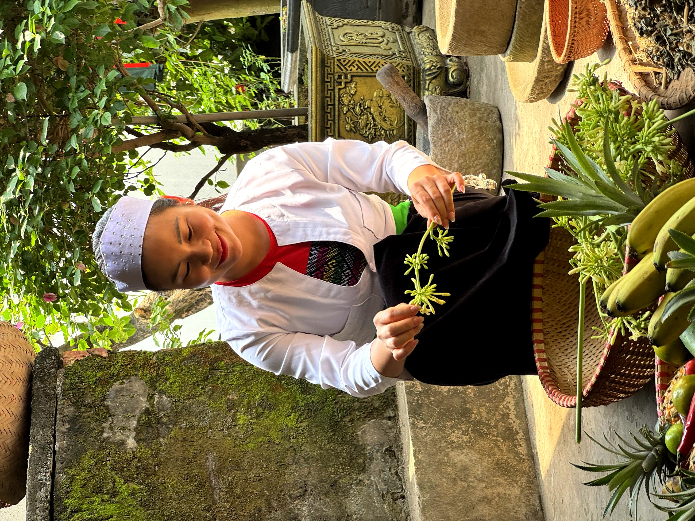
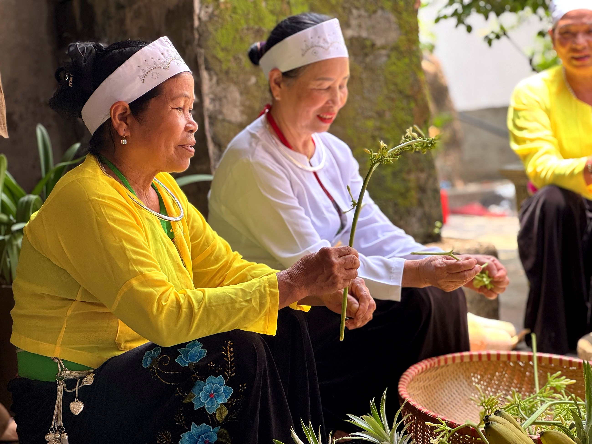

Loại hìnhTypeType
Homestay · lưu trúHomestay & AccommodationHomestay et hébergement

Bà Là Homestay là ngôi nhà của đôi vợ chồng người Mường – ông Nguyễn Quốc Huấn và bà Nguyễn Thị Là – được xây dựng vào thập niên 1980–1990 với lối kiến trúc nhà vườn quen thuộc của bản Mường Cốc. Không gian bài trí mộc mạc, sân vườn thoáng đãng và chiếc giếng gia đình còn sử dụng đến ngày nay tạo nên hình ảnh đời sống bản địa chân thực và gần gũi.
Điều đặc biệt tạo nên sức hút của điểm đến là chính ông bà chủ nhà – những người Mường thuần tuý với nhiều câu chuyện đời sống, phong tục tập quán và ký ức về một thời Mường Cốc trước đổi mới. Bà Là là người am hiểu về các loại thảo dược địa phương và thường đãi khách chén trà thảo mộc tự chế, mở đầu những cuộc trò chuyện ấm áp, chân thành.
Đây là điểm đến phù hợp với những du khách muốn lắng nghe, kết nối và cảm nhận chiều sâu văn hóa người Mường qua chính những người đang sống với văn hóa đó.
Ba La Homestay is the home of a Muong couple – Mr. Nguyen Quoc Huan and Mrs. Nguyen Thi La – built in the 1980s-1990s with the familiar garden house architecture of Muong Coc village. The rustic decor, airy garden, and family well still in use today create an authentic and intimate portrayal of local life.
What truly makes this destination captivating are the hosts themselves – authentic Muong people rich with life stories, customs, and memories of Muong Coc before the đổi mới (renovation) era. Mrs. La, knowledgeable about local herbs, often treats guests to homemade herbal tea, sparking warm and heartfelt conversations.
This destination is perfect for travelers who wish to listen, connect, and feel the profound depth of Muong culture through the very people who live it daily.
Le Homestay Ba La est la maison d'un couple Muong – M. Nguyen Quoc Huan et Mme Nguyen Thi La – construite dans les années 1980-1990 avec l'architecture de maison de jardin familière du village de Muong Coc. La décoration rustique, le jardin aéré et le puits familial encore utilisé aujourd'hui créent une image authentique et intime de la vie locale.
Ce qui rend cette destination vraiment captivante, ce sont les hôtes eux-mêmes – des Muong authentiques, riches en histoires de vie, coutumes et souvenirs de Muong Coc avant l'ère du đổi mới (rénovation). Mme La, connaisseuse des herbes locales, offre souvent aux invités du thé aux herbes fait maison, initiant des conversations chaleureuses et sincères.
Cette destination est parfaite pour les voyageurs qui souhaitent écouter, se connecter et ressentir la profondeur de la culture Muong à travers les personnes qui la vivent au quotidien.
| Giao lưu, trò chuyệnEngage with locals, share stories.Échangez et discutez avec les habitants. | Nghe kể chuyện đời sống và phong tục người MườngListen to stories of Muong life and customs.Écoutez des récits sur la vie et les coutumes Muong. |
| Thưởng thức trà thảo dượcEnjoy herbal teaDégustez une tisane | Trà lá từ vườn nhà, theo mùaSeasonal herbal tea from the home gardenThé aux herbes de saison du jardin familial |
| Tham quan nhà vườnExplore Garden HomesVisitez les maisons-jardins | Giới thiệu vườn cây, giếng gia đìnhDiscover the family garden and wellPrésentation du jardin et du puits familial |
| Chụp ảnh check-inPhoto OpportunitiesSpots photo | Không gian sân vườn, kiến trúc nhà cổ thập niên 80Garden courtyard space, 1980s ancient house architectureEspace cour-jardin, architecture de maison ancienne des années 80 |
| Đón khách đoànGroup WelcomeAccueil de groupes | Phục vụ nhóm nhỏ theo lịch sắp xếpSmall groups served by prior arrangementPetits groupes servis sur rendez-vous |


Bà Là Homestay hướng tới trở thành điểm kết nối văn hóa đặc trưng trong tuyến du lịch Mường Cốc – nơi du khách được lắng nghe câu chuyện đời người Mường từ chính người trong cuộc. Khi điều kiện cho phép, gia đình có thể mở rộng phục vụ ẩm thực và lưu trú, tạo thêm sinh kế từ tiềm năng văn hóa bản địa phong phú của mình. Điểm đến Du lịch cộng đồng Mường Cốc, Xã Mỹ Đức – Thành phố Hà NộiBa La Homestay aims to become a distinctive cultural connection point along the Muong Coc tour route – where visitors can hear the life stories of the Muong people directly from locals. When conditions permit, the family can expand to offer dining and accommodation, creating additional livelihoods from their rich indigenous cultural potential. A Muong Coc Community-Based Tourism Destination, My Duc Commune – Hanoi City.Le Ba La Homestay vise à devenir un point de connexion culturelle distinctif sur l'itinéraire touristique de Muong Coc – où les visiteurs peuvent entendre les récits de vie du peuple Muong directement des habitants. Lorsque les conditions le permettront, la famille pourra étendre ses services pour proposer restauration et hébergement, créant ainsi des moyens de subsistance supplémentaires grâce à son riche potentiel culturel autochtone. Une destination de tourisme communautaire à Muong Coc, commune de My Duc – Ville de Hanoi.